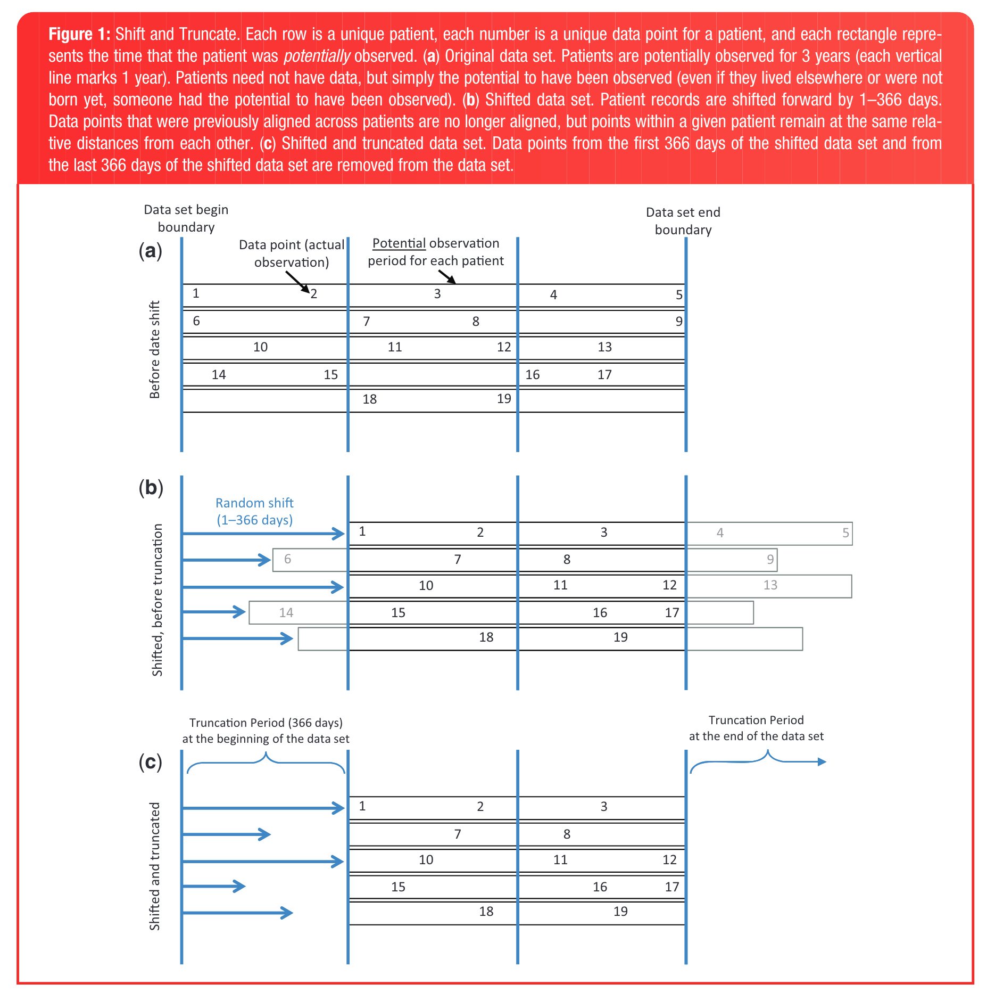

ภาคผนวก B — การทำข้อมูลปิดบังตัวตน (Data de-identification)
เว็บไซต์นี้อยู่ระหว่างจัดทำ จึงยังมีเนื้อหาไม่ครบถ้วน
ท่านสามารถร่วมเพิ่มเติมหรือแก้ไขเนื้อหาต่าง ๆ ได้ที่ GitHub: sidataplus/omop-book
ในการรักษาความเป็นส่วนตัว (privacy) ของผู้ป่วย จะต้องมีการทำข้อมูลให้ระบุตัวตนไม่ได้ (de-identification) กระบวนการที่ใช้กันโดยทั่วไป เช่น การเข้ารหัส (hash) ของเลขประจำตัวประชาชน ถือว่าเป็นการทำ pseudonymization ซึ่งยังคงมีความเสี่ยงในการระบุตัวตนย้อนกลับ (re-identification) เช่น ผ่านการดูประวัติเวลาการเข้ารับบริการร่วมกับข้อมูล demographic อื่น ๆ เป็นต้น จึงต้องมีวิธีการ de-identification ที่เพิ่มเติมขึ้นให้ข้อมูลเป็นข้อมูลนิรนาม (anonymous data) ซึ่งระบุตัวตนย้อนกลับได้ยากมากยิ่งขึ้น เช่น การขยับเวลาเข้ารับบริการ (time shifting) ของผู้ป่วยแต่ละราย แบบสุ่มคงที่ เพื่อยังคงรักษาระยะห่างระหว่างการเข้ารับบริการแต่ละครั้งในผู้ป่วยรายเดียวกัน เป็นต้น
การทำ Time Shifting เป็นวิธีการ de-identification ที่นิยมใช้สำหรับฐานข้อมูลสำหรับงานวิจัยในระดับสากล เช่น ฐานข้อมูล Cure ID ของ US Food and Drug Administration (FDA) ร่วมกับ the National Institutes of Health (NIH) National Center for Translational Sciences (NCATS) โดยใช้วิธีการ Shift and Truncate (SANT) ของ Hripcsak et al. (2016) ตาม รูปที่ B.1 บนข้อมูลตามมาตรฐาน OMOP CDM ด้วย SQL scripts ที่เผยแพร่ที่ GitHub: OHDSI/CureIdRegistry โดยใช้คู่มือประกอบนี้
